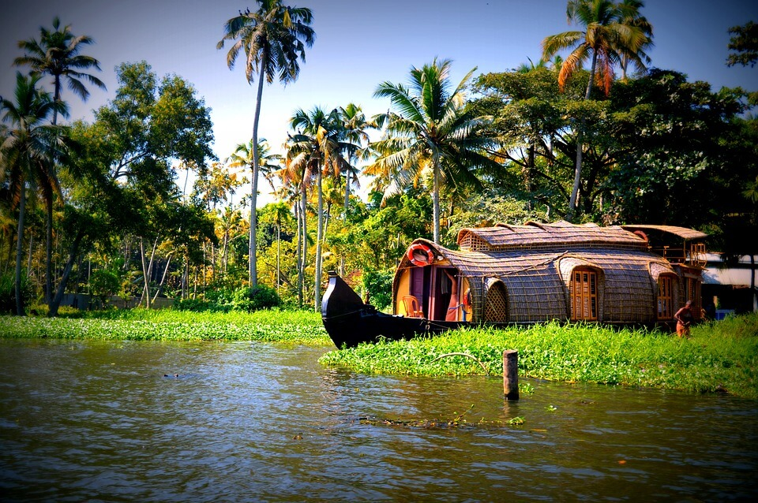

Kerala Districts
Thiruvananthapuram
Thiruvananthapuram District is the southernmost district in the Indian state of Kerala. The district was created in 1949
More InfoKollam
Kollam is the fourth largest city in Kerala and is known for cashew processing and coir manufacturing.
More Info

Alappuzha
Alappuzha is bounded by the Laccadive Sea on its west. The town has a network of lakes, lagoons and fresh water rivers.
More Info

Waynad
Wayanad is a district in the north-east of the Indian state of Kerala, with administrative headquarters at the municipality of Kalpetta.
More Info